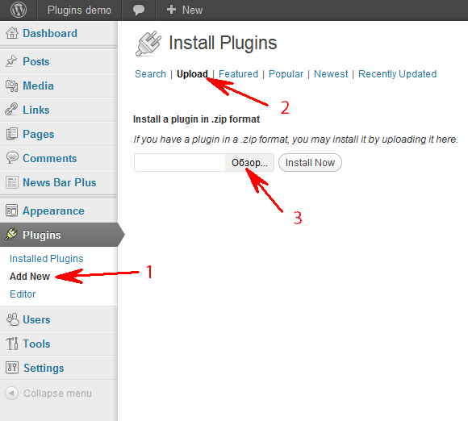
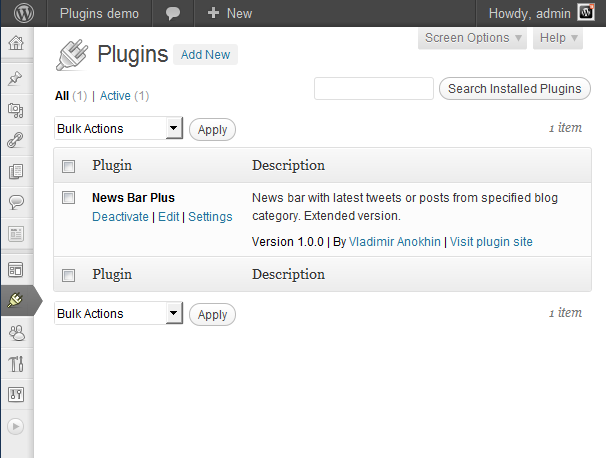
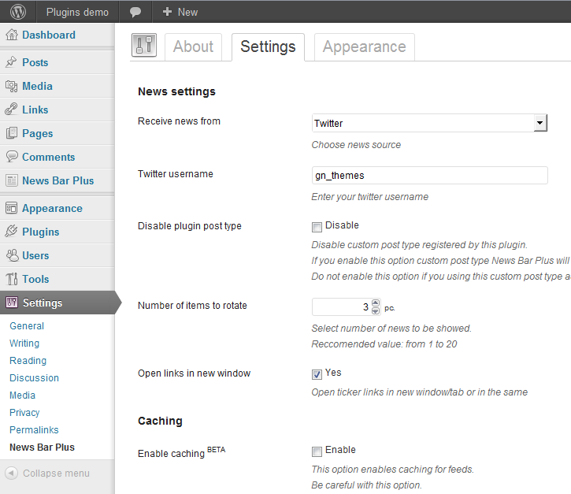

Thank you for purchasing my plugin. If you have any questions that are beyond the scope of this help file, please feel free to email via my user page contact form. Thanks so much!
Installation of News Bar Pro is simple as installing any other WordPress plugin.

Now you have installed and activated plugin. At plugins dashboard you can see the link to the settings page.

By default plugin recieve news from my Twitter profile. You can change it at plugin options panel.
Go to "Dashboard > Settings > News Bar Plus > Settings (tab)". Here you can change all available plugin options.

A: Go to "Dashboard > Settings > News Bar Plus > Appearance (tab)" and find CSS position option. Change it value to Absolute and bar sliding will be disabled
A: You need to use custom post type. Go to "Dashboard > Settings > News Bar Plus > Settings (tab)" and find "Receive news from" option. Select Custom post type from dropdown list. Then, go to "Dashboard > News Bar Plus > Add item". Now, you already adding your first custom item.
Caching option enables caching for rss-feeds. That means twitter messages, blog category posts and rss-feed item will be cached. This option not caching Custom Post Type items.